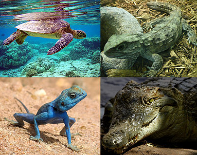
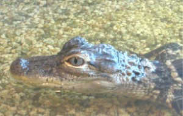

Úvod
Plazi jsou obratlovci, jejichž tělo je pokryté tuhými šupinami nebo rohovitými štítky, a kladou vejce. Patří ke studenokrevným (poikilotermním) živočichům (přebírají teplotu od okolního prostředí). Mláďata se líhnou plně vyvinutá. Lebka plazů je s páteří spojena kloubně a jsou to živočichové s plně vyvinutým amnionem. Tradičně jsou děleni do čtyř řádů:
- krokodýli (aligátoři, krokodýlovití a gaviálové): k roku 2019 asi 27 druhů (viz taxonomie druhů)
- šupinatí (hadi, ještěři a dvouplazi): více než 10 000 druhů (k roku 2018 přibližně 10 793)
- želvy: více než 350 druhů (k roku 2017 asi 356)
- hatérie: dva druhy
Plazy lze najít na všech kontinentech kromě Antarktidy, nicméně jejich oblíbeným prostředím jsou tropy a subtropy. Plazi nemají stálou tělesnou teplotu. Současné druhy plazů nevytvářejí takové množství energie, aby si udrželi stálou tělesnou teplotu, místo toho se spoléhají na řízenou výměnu tepla s okolním prostředím, například se přesouvají ze slunce do stínu a naopak. Mnoho druhů dokáže tímto způsobem udržet svoji tělesnou teplotu v úzkém rozmezí po velkou část dne. Nestálá tělesná teplota s sebou přináší významné problémy, ale na druhé straně poskytuje jednu velkou výhodu: Umožňuje plazům vystačit si s daleko menším množstvím potravy, než jaké potřebuje srovnatelně velký savec, který většinu energie z potravy použije k udržení tělesné teploty. Převážná většina druhů plazů je masožravá a vejcorodá. V malé míře se pak vyskytují také vejcoživorodé a živorodé druhy. Mnohé druhy vykazují dlouhověkost, navozenou zřejmě ekologickými i fyziologickými faktory (nižší aktivitou a absencí predátorů).
Největšími známými zástupci této skupiny byly druhohorní sauropodní dinosauři, dorůstající hmotnosti přes 75 tun a délky přes 35 metrů.
> Fylogeneze
Plazi (Reptilia či Sauropsida) jsou sesterskou skupinou savců v širším smyslu slova (Synapsida). Nejprimitivnějšími žijícími plazy jsou s velkou pravděpodobností želvy, i když některé nové molekulární studie přiřazují želvy jako sesterskou skupinu k archosaurům, tedy dovnitř Diapsida v širším smyslu. Rozdělení želv podle způsobu skrývání hlavy na skrytohrdlé (Cryptodira) a skrytohlavé (Pleurodira) je z hlediska požadavku na monofylii snad v pořádku
Zbylí plazi (Diapsida v užším smyslu; zařazení želv mezi Diapsida je nejisté) se dělí na dvě velké větve: Archosauria zahrnující krokodýly a dinosaury včetně ptáků a Lepidosauria, kam patří haterie a šupinatí plazi. Šupinatí se dělí na dvě linie, jedna (Iguania) obsahuje agamy, leguány a chameleóny, druhá zbývající ještěry (kteří tedy nejsou přirozenou skupinou), dvouplazy a hady. Nejbližší příbuzní hadů jsou varani a jim příbuzné skupiny. Nejvíce evolučních změn na molekulární úrovni nastalo při vzniku hadů.
Navzdory rozšířenému názoru u laické veřejnosti nebyli populární dinosauři zástupci skupiny šupinatých, nepatřili tedy mezi ještěry ani jejich blízké příbuzné (ačkoliv jsou běžně označováni za "pravěké ještěry" či "veleještěry"). Dinosauři byli zástupci kladu Archosauria, nikoliv Lepidosauria.
> Evoluce plazů
Několik tisíc fosilních druhů ukazuje jasný přechod od předchůdců plazů až k dnešním plazům.
První skutečný „plaz“ je kategorizován jako Anapsida, maje pevnou lebku s otvory pouze pro nos, oči, míchu apod. Věřilo se, že želvy jsou poslední přežívající Anapsida, jelikož mají také tuto strukturu lebky, ale tento argument je velmi sporný, jelikož lze tvrdit, že želvy si vyvinuly tuto jednoduchou lebku, aby zlepšily své brnění. Obě strany sporu mají výrazné důkazy, proto je tento konflikt zatím nevyřešený.
Krátce po objevení prvních plazů se oddělily dvě větve. Jedna skupina Synapsida měla pár otvorů v lebce hned u spánků, které sloužily jak pro odlehčení lebky, tak pro zvětšení místa pro čelistní svaly. Druhá skupina Diapsida má stejné díry spolu s druhým párem, který byl na lebce o něco výš. Třída Synapsida se vyvinula v savce, zatímco Diapsida se znovu rozdělila na dva rody, lepidosaury (obsahují hady, ještěrky, haterie, stejně jako vyhynulé mořské plazy z éry Mezozoikum) a archosaury (v současnosti reprezentováno krokodýly a ptáky, ale patří sem i vyhynulí pterosauři a neptačí dinosauři).
> Tělní soustava
Oběhová
Plazi mají uzavřený krevní oběh přes čtyřkomorové srdce, dvě srdeční předsíně a dvě komory oddělené prodiravěnou blánou (krev se minimálně mísí). Běžně mají aortální chlopeň a zcela postrádají, oproti obojživelníkům, žilní splav a srdeční nástavec. Navzdory tomu – kvůli dynamice tekutin – se plazům při průtoku krve srdcem do určité míry mísí okysličená krev s neokysličenou.
Dýchací
Všichni plazi dýchají výhradně plícemi a žádný druh nedýchá pokožkou ani žábrami. Mají dvě externí nozdry s interními nozdrami, které ústí do orální dutiny. Plíce jsou typicky provětrávány kombinací rozpínání a stahování žeber pomocí osových svalů. Krokodýli se také spoléhají na jaterní pístovou metodu, při které jsou játra tažena zpět a svaly jsou svázané se stydkou kostí (součást pánve), která naopak zatáhne spodek plic zpět a tím je roztáhne. Také mají hrtan, průdušnici a průdušky. Plazi na rozdíl od savců nemají bránici (krokodýli mají).
V ústní dutině již mají tvrdé patro, mohou tedy polykat a dýchat zároveň. Mezi ústní a nosní dutinou je uložen tzv. Jacobsonův orgán k velmi citlivé chemické analýze okolí. Jeho prostřednictvím dokážou plazi zachytit i velmi malé množství molekul. Látky jsou na místo analýzy dopraveny pomocí jazyka (známe vyplazování jazyka u hadů). Touto metodou jsou schopni najít potravu nebo svého nepřítele i na velkou vzdálenost. Zajímavé je, že tento orgán je zachován i u některých savců. Konkrétně u koně a zebry, kteří poznají říji klisen i na velké vzdálenosti.
Vylučovací
Vyměšování pomocí pravých párových ledvin, kyselina močová je silný dusíkový odpad. Vodu již umějí velmi efektivně resorbovat, takže nedochází k velkým ztrátám. Obvykle vylučují bílou kašovitou moč, která zahrnuje i výkaly.
Nervová
V porovnání s obojživelníky mají pokročilý nervový systém. Poprvé se zde u vývojově dokonalejších plazů objevuje druhotná kůra koncového mozku. Mají dvanáct párů kraniálních nervů.
Díky závislosti na teplotě okolí mají vysoce vyvinuté termoreceptivní funkce. Dokáží rozeznat změny teploty řádově v tisícinách stupňů (0,00X °C).
Oko plazů je dokonale vyvinuto. Některé druhy mají barevné vidění, některé dokážou rozeznávat okem i tepelné rozdíly (termovize).
Pohlavní
Plazi mají oddělené pohlaví s vnitřní fertilizací. Zárodečná vajíčka jsou chráněna koženou nebo vápníkovou skořápkou.
> Rozmnožování
U plazů se vyskytují všechny tři typy rozmnožování.
- vejcorodost
- vejcoživorodost
- vzácně živorodost
Vejcorodí plazi kladou svá vajíčka vždy na souš a ve většině případů se o ně již nestarají. Částečná péče o potomky je dokumentována pouze u některých pokročilých druhů. Například krokodýlí samice chrání hnízdo s vajíčky a po vylíhnutí pomáhá mláďatům do vody. Pak je opouští.
Vejcoživorodí jedinci vajíčka neukládají mimo tělo. Vývoj jedince tedy probíhá přímo v těle samice. Tím snižují možnost útoku predátorů. Nový jedinec se z vajíčka vylíhne buď bezprostředně po nakladení, nebo již při vlastním snášení.
Živorodí jsou velmi vzácní. Zárodek se v jejich případě vyvíjí přímo v těle a je vyživován z primitivní placenty (nepravá placentace zárodků). Mezi živorodé patří například scink z rodu Tiliqua.
U mnoha druhů plazů se vyskytuje jev zvaný „teplotní vývojová plasticita“. Pohlaví mláďat je totiž do jisté míry ovlivňováno i okolní teplotou. Tento jev je v současné době intenzivně zkoumán.
> Ohrožení
Výzkum z roku 2022 ukázal, že v ohrožení vyhynutím je asi 21 % žijících druhů plazů.